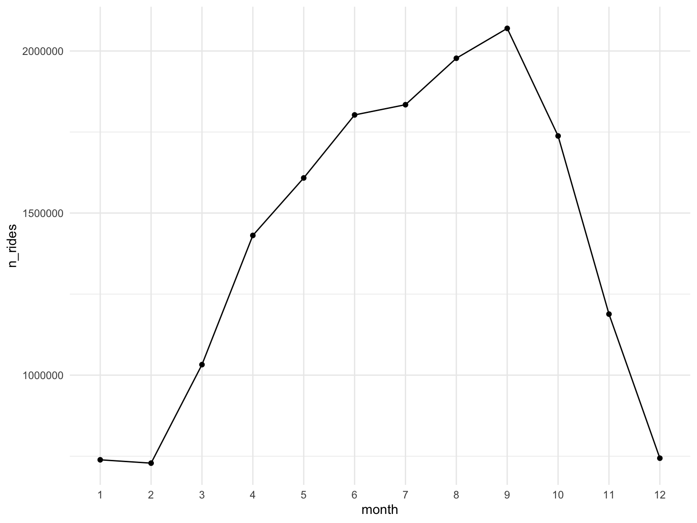

CitiBike Data: These datasets contain monthly logs of trip, including ride ID, the user’s status (subscriber or casual user), trip start/end longitude/latitude coordinates, and the trip start/stop times and duration.
Social Deprivation Index: The social deprivation index (SDI) is an effort to generate a scoring system of socioeconomic factors using US census data from the American Community Survey. The final SDI is a composite measure of percent living in poverty, percent with less than 12 years of education, percent single-parent households, the percentage living in rented housing units, the percentage living in the overcrowded housing unit, percent of households without a car, and percentage nonemployed adults under 65 years of age. For more details please see the webpage link.
Overweight Data: This dataset contains publicly available data from NYC regarding the percent of people who are overweight per area.
Air Quality Index Data: The air quality (AQ) data originated from NYC Open Data, contributed by the Department of Hygiene and Mental Health and include air quality indexes measured across boroughs in NYC.
The Citi Bike data was a collection of csv files that we downloaded and merged. At first, we were specifically interested in 2019 as this was when SDI scores were available. We downloaded the data files from December 2018 through January 2020.
A look at the raw data:
citibike =
tibble(
files = list.files("./citibike/"),
path = str_c("./citibike/", files)
) |>
mutate(data = map(path, ~read_csv(.x, col_types = cols(
'end station id' = col_double(),
'start station id' = col_double()
)))) |>
unnest(cols = c(data))
citibike |>
head() |>
knitr::kable()| files | path | tripduration | starttime | stoptime | start station id | start station name | start station latitude | start station longitude | end station id | end station name | end station latitude | end station longitude | bikeid | usertype | birth year | gender |
|---|---|---|---|---|---|---|---|---|---|---|---|---|---|---|---|---|
| 201812-citibike-tripdata.csv | ./citibike/201812-citibike-tripdata.csv | 689 | 2018-12-01 00:00:04 | 2018-12-01 00:11:33 | 3359 | E 68 St & Madison Ave | 40.76916 | -73.96703 | 164 | E 47 St & 2 Ave | 40.75323 | -73.97033 | 35033 | Subscriber | 1989 | 1 |
| 201812-citibike-tripdata.csv | ./citibike/201812-citibike-tripdata.csv | 204 | 2018-12-01 00:00:05 | 2018-12-01 00:03:30 | 3504 | E 123 St & Lexington Ave | 40.80293 | -73.93790 | 3490 | E 116 St & 2 Ave | 40.79688 | -73.93726 | 20501 | Subscriber | 1966 | 1 |
| 201812-citibike-tripdata.csv | ./citibike/201812-citibike-tripdata.csv | 316 | 2018-12-01 00:00:10 | 2018-12-01 00:05:27 | 270 | Adelphi St & Myrtle Ave | 40.69308 | -73.97179 | 243 | Fulton St & Rockwell Pl | 40.68823 | -73.97938 | 18386 | Subscriber | 1984 | 1 |
| 201812-citibike-tripdata.csv | ./citibike/201812-citibike-tripdata.csv | 726 | 2018-12-01 00:00:21 | 2018-12-01 00:12:28 | 495 | W 47 St & 10 Ave | 40.76270 | -73.99301 | 3660 | W 16 St & 8 Ave | 40.74102 | -74.00138 | 27616 | Subscriber | 1983 | 1 |
| 201812-citibike-tripdata.csv | ./citibike/201812-citibike-tripdata.csv | 397 | 2018-12-01 00:00:29 | 2018-12-01 00:07:07 | 473 | Rivington St & Chrystie St | 40.72110 | -73.99193 | 3467 | W Broadway & Spring Street | 40.72495 | -74.00166 | 35096 | Subscriber | 1976 | 1 |
| 201812-citibike-tripdata.csv | ./citibike/201812-citibike-tripdata.csv | 299 | 2018-12-01 00:00:30 | 2018-12-01 00:05:30 | 237 | E 11 St & 2 Ave | 40.73047 | -73.98672 | 237 | E 11 St & 2 Ave | 40.73047 | -73.98672 | 15087 | Customer | 1994 | 1 |
The cleaning of the Citi Bike data included the following steps:
Note: throughout the code chunks we have removed large dataframes to save memory.
A look at the tidied dataframe:
citibike_df = citibike |>
janitor::clean_names() |>
select(-files, -path) |>
mutate(month = as.factor(month(starttime))) |>
rename(trip_duration_sec = tripduration,
start_time = starttime,
stop_time = stoptime,
user_type = usertype)|>
mutate(gender = recode(gender,
"0" = "Unknown",
"1" = "Male",
"2" = "Female"),
trip_duration_min = trip_duration_sec / 60,
age = 2019 - birth_year
) |>
filter(
trip_duration_sec >= 300,
trip_duration_sec <= 86400,
as.Date(stop_time) >= as.Date("2019-01-01"),
as.Date(start_time) <= as.Date("2019-12-31")
) |>
select(trip_duration_sec, trip_duration_min, everything())
remove(citibike)
head(citibike_df) |>
knitr::kable()| trip_duration_sec | trip_duration_min | start_time | stop_time | start_station_id | start_station_name | start_station_latitude | start_station_longitude | end_station_id | end_station_name | end_station_latitude | end_station_longitude | bikeid | user_type | birth_year | gender | month | age |
|---|---|---|---|---|---|---|---|---|---|---|---|---|---|---|---|---|---|
| 62663 | 1044.3833 | 2018-12-31 12:42:23 | 2019-01-01 06:06:47 | 3427 | Lafayette St & Jersey St | 40.72431 | -73.99601 | 529 | W 42 St & 8 Ave | 40.75757 | -73.99099 | 19573 | Customer | 2000 | Female | 12 | 19 |
| 86324 | 1438.7333 | 2018-12-31 13:21:55 | 2019-01-01 13:20:39 | 458 | 11 Ave & W 27 St | 40.75140 | -74.00523 | 127 | Barrow St & Hudson St | 40.73172 | -74.00674 | 16996 | Subscriber | 1953 | Female | 12 | 66 |
| 77833 | 1297.2167 | 2018-12-31 16:54:58 | 2019-01-01 14:32:11 | 3055 | Greene Ave & Nostrand Ave | 40.68833 | -73.95092 | 437 | Macon St & Nostrand Ave | 40.68098 | -73.95005 | 15420 | Customer | 1969 | Unknown | 12 | 50 |
| 52587 | 876.4500 | 2018-12-31 17:37:05 | 2019-01-01 08:13:33 | 3457 | E 58 St & Madison Ave | 40.76303 | -73.97210 | 3457 | E 58 St & Madison Ave | 40.76303 | -73.97210 | 28349 | Subscriber | 1966 | Female | 12 | 53 |
| 76290 | 1271.5000 | 2018-12-31 18:00:44 | 2019-01-01 15:12:14 | 3521 | Lenox Ave & W 111 St | 40.79879 | -73.95230 | 3164 | Columbus Ave & W 72 St | 40.77706 | -73.97898 | 14710 | Subscriber | 1995 | Female | 12 | 24 |
| 51131 | 852.1833 | 2018-12-31 18:40:45 | 2019-01-01 08:52:56 | 3581 | Underhill Ave & Lincoln Pl | 40.67401 | -73.96715 | 3576 | Park Pl & Vanderbilt Ave | 40.67670 | -73.96902 | 16935 | Customer | 1987 | Male | 12 | 32 |
The Citi Bike dataframe includes 16893163 trips and 18 variables. The variables in the dataframe are trip_duration_sec, trip_duration_min, start_time, stop_time, start_station_id, start_station_name, start_station_latitude, start_station_longitude, end_station_id, end_station_name, end_station_latitude, end_station_longitude, bikeid, user_type, birth_year, gender, month, age.
Due to large sample size that limits technical processing feasibility, we decided to focus on only one month of Citi Bike data. To do so, we look at the distribution of number of rides by month. We chose September as our month of focus because of the high ride volume.
Before limiting the data to September, we want to get a list of all stations in the dataset for future exploration:
start_station = citibike_df |>
distinct(start_station_id, start_station_name,
start_station_latitude, start_station_longitude) |>
rename(
station_id = start_station_id,
station_name = start_station_name,
latitude = start_station_latitude,
longitude = start_station_longitude
)
end_station = citibike_df |>
distinct(end_station_id, end_station_name,
end_station_latitude, end_station_longitude) |>
rename(
station_id = end_station_id,
station_name = end_station_name,
latitude = end_station_latitude,
longitude = end_station_longitude
)
stations = rbind(start_station, end_station) |>
unique() citibike_df |>
group_by(month) |>
summarize(n_rides = n()) |>
arrange(month) |>
ggplot(aes(x = month, y = n_rides, group = 1)) +
geom_point() +
geom_line() 
Since September is the month of highest usage, we focus on September 2019.
citibike_df = citibike_df |> filter(month == 9)The September 2019 Citi Bike dataframe includes 2069707 trips.
The overweight data was downloaded as .csv files for “Overweight and Obese Adults.” We were specifically interested in 2019 as this was when SDI scores were available.
The cleaning of the overweight data included the following steps:
A look at the tidied dataframe:
overweight_df =
read_csv('./data/SDI_data/nyc_overweight_or_obesity_adults.csv') |>
janitor::clean_names() |>
mutate(number = gsub("\\*", "", number)) |>
mutate(number = gsub(",", "", number)) |>
mutate(number = as.numeric(number)) |>
mutate(
percent_low = as.numeric(gsub("^.*\\(\\s*", "", gsub("\\s*,.*$", "", percent))),
percent_high = as.numeric(gsub("^.*\\,\\s*", "", gsub("\\)$", "", percent))),
percent = as.numeric(ifelse(grepl("\\*", percent),
gsub("\\*.*$", "", percent),
gsub("\\s*\\(.*", "", percent)))) |>
rename(year = time) |>
filter (year == 2019)
head(overweight_df) |>
knitr::kable()| year | geo_type | geo_id | geo_rank | geography | number | percent | percent_low | percent_high |
|---|---|---|---|---|---|---|---|---|
| 2019 | UHF34 | 101 | 3 | Kingsbridge - Riverdale | 37000 | 52.4 | 40.8 | 63.8 |
| 2019 | UHF34 | 102 | 3 | Northeast Bronx | 103000 | 69.6 | 59.7 | 78.0 |
| 2019 | UHF34 | 103 | 3 | Fordham - Bronx Pk | 122000 | 71.1 | 61.1 | 79.3 |
| 2019 | UHF34 | 104 | 3 | Pelham - Throgs Neck | 152000 | 66.4 | 58.7 | 73.4 |
| 2019 | UHF34 | 201 | 3 | Greenpoint | 40000 | 41.8 | 31.0 | 53.6 |
| 2019 | UHF34 | 202 | 3 | Downtown - Heights - Slope | 86000 | 50.8 | 41.8 | 59.7 |
#write_csv(overweight_df, "data/SDI_data/overweight_data_clean.csv")
The air quality (AQ) data was a downloaded from .csv files.
The cleaning of the air quality index data included the following steps:
A look at the tidied dataset:
air_quality_df = read_csv("./data/air_quality/Air_Quality_20231126.csv") |>
janitor::clean_names() |>
mutate(
start_date = mdy(start_date),
year = year(start_date)
) |>
filter(year == "2019")
#Filter to only annual averages of fine particles (PM 2.5) mean measurement, mcg/m3
air_quality_df =
air_quality_df |>
filter(geo_type_name == "UHF34") |>
filter(time_period == "Annual Average 2019") |>
filter(name == "Fine particles (PM 2.5)")
head(air_quality_df) |>
knitr::kable()| unique_id | indicator_id | name | measure | measure_info | geo_type_name | geo_join_id | geo_place_name | time_period | start_date | data_value | message | year |
|---|---|---|---|---|---|---|---|---|---|---|---|---|
| 649819 | 365 | Fine particles (PM 2.5) | Mean | mcg/m3 | UHF34 | 207 | East Flatbush - Flatbush | Annual Average 2019 | 2019-01-01 | 6.31 | NA | 2019 |
| 649858 | 365 | Fine particles (PM 2.5) | Mean | mcg/m3 | UHF34 | 407 | Southwest Queens | Annual Average 2019 | 2019-01-01 | 6.19 | NA | 2019 |
| 649789 | 365 | Fine particles (PM 2.5) | Mean | mcg/m3 | UHF34 | 101 | Kingsbridge - Riverdale | Annual Average 2019 | 2019-01-01 | 6.71 | NA | 2019 |
| 649795 | 365 | Fine particles (PM 2.5) | Mean | mcg/m3 | UHF34 | 103 | Fordham - Bronx Pk | Annual Average 2019 | 2019-01-01 | 6.70 | NA | 2019 |
| 649882 | 365 | Fine particles (PM 2.5) | Mean | mcg/m3 | UHF34 | 501502 | Northern SI | Annual Average 2019 | 2019-01-01 | 6.05 | NA | 2019 |
| 649876 | 365 | Fine particles (PM 2.5) | Mean | mcg/m3 | UHF34 | 309310 | Union Square-Lower Manhattan | Annual Average 2019 | 2019-01-01 | 8.67 | NA | 2019 |
The AQ dataframe now includes 34 rows and 13 variables. The variables in the dataframe are unique_id, indicator_id, name, measure, measure_info, geo_type_name, geo_join_id, geo_place_name, time_period, start_date, data_value, message, year.
To combine datasets, they all need to have the same geographic identifier. We decided to use United Hospital Fund (UHF) 34 codes which consists of 34 adjoining zip codes with similar characteristics compiled by the NYC government. We used UHF 34 instead of other UHF codes, such as UHF 42, as UHF 34 had the least number of neighborhoods and is therefore more comparable (contains the largest area per neighborhood).
We did the following:
uhf_zip =
pdf_text("./data/geocoding/zipcodetable.pdf") |>
extract(1)
uhf_zip_df =
uhf_zip |>
str_split("\n") |>
tibble() |>
rename("data" = "str_split(uhf_zip, \"\\n\")") |>
unnest("data") |>
filter(data != "") |>
filter(!row_number() %in% c(1, 2, 51)) |>
filter(!row_number() %in% c(1, 2, 10, 22, 33, 44)) |>
mutate(data = str_squish(data)) |>
mutate(data = str_remove_all(data, "-")) |>
mutate(data = str_squish(data)) |>
separate(data, into = c("uhf", "rest"), sep = "(?<=\\d\\s)") |>
separate(col = "rest", into = c("neighborhood", "zip"), sep = "(?=\\s\\d)", extra = "merge") |>
separate(col = "zip", into = c("zip1", "zip2", "zip3", "zip4", "zip5", "zip6", "zip7", "zip8", "zip9"), sep = ",") |>
mutate(across(everything(), ~ str_trim(.x))) |>
mutate(across(c("zip1":"zip9"), ~ as.numeric(.x))) |>
mutate(uhf = as.numeric(uhf)) |>
pivot_longer(c(zip1:zip9), names_to = "zip_name", values_to = "zip") |>
filter(!is.na(zip)) |>
select(!zip_name)uhf_34 =
pdf_text("./data/geocoding/uhf34.pdf")
uhf_34_df =
uhf_34 |>
str_split("\n") |>
tibble() |>
rename("data" = "str_split(uhf_34, \"\\n\")") |>
unnest("data") |>
filter(data != "") |>
mutate(data = str_squish(data)) |>
filter(!row_number() %in% c(1, 2, 7, 14, 18, 21, 24, 27, 28, 31, 32, 34, 35, 39, 40, 42, 43, 44, 45, 47, 48, 52, 53, 57, 61:75)) |>
mutate(data = str_replace(data, "Kingsbridge - Riverdale", "101 Kingsbridge - Riverdale")) |>
mutate(data = str_replace(data, "Northeast Bronx", "102 Northeast Bronx")) |>
filter(!row_number() %in% c(1,2)) |>
mutate(data = str_remove_all(data, "-"),
data = str_squish(data),
data = str_trim(data)) |>
mutate(data = str_remove(data, "(\\d)+$")) |>
mutate(data = str_remove(data, "(\\d)+\\s$")) |>
separate(data, into = c("uhf34", "neighborhood"), sep = "(?<=\\d\\s)") |>
mutate(uhf34 = as.numeric(str_trim(uhf34)),
neighborhood = str_trim(neighborhood)) |>
mutate(uhf2 = uhf34) |>
separate_wider_position(uhf2, widths = c("1_uhf" = 3, "2_uhf" = 3, "3_uhf" = 3), too_few = "align_start") |>
pivot_longer(c("1_uhf":"3_uhf"), names_to = "uhf_name", values_to = "uhf42") |>
select(!uhf_name) |>
mutate(uhf34 = as.numeric(uhf34),
uhf42 = as.numeric(uhf42))|>
mutate(borough = case_when(
substring(uhf34, 1, 1) == "1" ~ "Bronx",
substring(uhf34, 1, 1) == "2" ~ "Brooklyn",
substring(uhf34, 1, 1) == "3" ~ "Manhattan",
substring(uhf34, 1, 1) == "4" ~ "Queens",
substring(uhf34, 1, 1) == "5" ~ "Staten Island",
TRUE ~ "Unknown" # Handle any other values
))joined_uhf_34_42 =
uhf_zip_df |>
left_join(y = uhf_34_df, by = join_by("uhf" == "uhf42")) |>
rename("uhf34_neighborhood" = "neighborhood.y",
"uhf42_neighborhood" = "neighborhood.x",
"uhf42" = "uhf")Now that we have a crosswalk among all location identifiers (UHF 34, UHF 42, and zipcode) used in our datasets, we’ll make sure they all have UHF 34 so they can be merged together later.
joined_SDI_zip_neighborhood =
SDI_df |>
filter(zip %in% pull(joined_uhf_34_42, zip)) |>
mutate(zip = as.numeric(zip)) |>
left_join(y = joined_uhf_34_42, by = "zip")joined_overweight_zip_neighborhood =
overweight_df |>
left_join(y = joined_uhf_34_42, by = join_by("geo_id" == "uhf34")) |>
rename(percent_overweight = percent)#Align UHF neighborhood names
air_quality_df =
left_join(air_quality_df, uhf_34_df, by = c("geo_join_id" = "uhf34"))
air_quality_df =
air_quality_df |>
select(data_value, neighborhood ) |>
distinct()The Citi Bike data is coded by latitude/longitude. To enable merging of Citi Bike data with the health datasets, we need to transform coordinates to zipcode, which can later be easily converted to UHF 34 identifiers.
To get zipcodes for each latitude/longitude pair in the Citi Bike data, we used the tidygeocoder packager. The full code with details of how that was created can be found here. Here, we import the latitude/longitude to zipcode crosswalk that we generated.
latlong_zip = read_csv('./data/geocoding/citibike_latlong_zip.csv')
citibike_zip =
citibike_df |>
left_join(latlong_zip,
by = c("start_station_latitude" = "latitude",
"start_station_longitude" = "longitude")) |>
rename("start_zipcode" = "postcode") |>
left_join(latlong_zip,
by = c("end_station_latitude" = "latitude",
"end_station_longitude" = "longitude")) |>
rename("end_zipcode" = "postcode")
remove(citibike_df)There are 83953 entries missing either the start or end zipcode.
A look at the start coordinates with missing zipcodes below:
citibike_zip |>
filter(is.na(start_zipcode)) |>
group_by(start_station_name, start_station_latitude, start_station_longitude) |>
summarize(n = n()) |>
knitr::kable()| start_station_name | start_station_latitude | start_station_longitude | n |
|---|---|---|---|
| Broadway & W 36 St | 40.75098 | -73.98765 | 3305 |
| Broadway & W 37 St | 40.75173 | -73.98754 | 2830 |
| Broadway & W 38 St | 40.75300 | -73.98722 | 4207 |
| Broadway & W 41 St | 40.75514 | -73.98658 | 8446 |
| Cooper Square & Astor Pl | 40.72951 | -73.99075 | 7993 |
| E 47 St & 1 Ave | 40.75207 | -73.96784 | 1622 |
| Roebling St & N 4 St | 40.71469 | -73.95739 | 1758 |
| South St & Gouverneur Ln | 40.70355 | -74.00670 | 6047 |
| W 52 St & 6 Ave | 40.76133 | -73.97982 | 4100 |
| William St & Pine St | 40.70718 | -74.00887 | 2582 |
A look at the end coordinates with missing zipcodes below:
citibike_zip |>
filter(is.na(end_zipcode)) |>
group_by(end_station_name, end_station_latitude, end_station_longitude) |>
summarize(n = n()) |>
knitr::kable()| end_station_name | end_station_latitude | end_station_longitude | n |
|---|---|---|---|
| Broadway & W 36 St | 40.75098 | -73.98765 | 3045 |
| Broadway & W 37 St | 40.75173 | -73.98754 | 2705 |
| Broadway & W 38 St | 40.75300 | -73.98722 | 4341 |
| Broadway & W 41 St | 40.75514 | -73.98658 | 8530 |
| Cooper Square & Astor Pl | 40.72951 | -73.99075 | 7581 |
| E 47 St & 1 Ave | 40.75207 | -73.96784 | 1672 |
| Roebling St & N 4 St | 40.71469 | -73.95739 | 1805 |
| South St & Gouverneur Ln | 40.70355 | -74.00670 | 5718 |
| W 52 St & 6 Ave | 40.76133 | -73.97982 | 4437 |
| William St & Pine St | 40.70718 | -74.00887 | 2626 |
For the above missing zipcodes, we manually coded based on latitude,
longitude, and station_name to identify what the correct
zipcode. Upon manually exploration, these looked like some data quality
issues with the coordinates, but based on the staton name we were able
to identify the correct zipcode. We stored this work in a .csv on our
github here.
The code below implements filling in those missing zipcode values.
citibike_zip = citibike_zip |>
mutate(start_zipcode = case_when(start_station_name == "Broadway & W 32 St" ~ 10001,
start_station_name == "Cooper Square & Astor Pl" ~ 10003,
start_station_name == "William St & Pine St" ~ 10005,
start_station_name %in% c("Broadway & W 36 St","Broadway & W 37 St","Broadway & W 38 St","Broadway & W 41 St") ~ 10018,
start_station_name == "W 52 St & 6 Ave" ~ 100019,
start_station_name %in% c("Broadway & W 41 St","W 43 St & 6 Ave") ~ 10036,
start_station_name == "South St & Gouverneur Ln" ~ 10043,
start_station_name == "E 47 St & 1 Ave" ~ 10075,
start_station_name == "Roebling St & N 4 St" ~ 11211,
TRUE ~ start_zipcode)) |>
mutate(end_zipcode = case_when(end_station_name == "Broadway & W 32 St" ~ 10001,
end_station_name == "Cooper Square & Astor Pl" ~ 10003,
end_station_name == "William St & Pine St" ~ 10005,
end_station_name %in% c("Broadway & W 36 St","Broadway & W 37 St","Broadway & W 38 St","Broadway & W 41 St") ~ 10018,
end_station_name == "W 52 St & 6 Ave" ~ 100019,
end_station_name %in% c("Broadway & W 41 St","W 43 St & 6 Ave") ~ 10036,
end_station_name == "South St & Gouverneur Ln" ~ 10043,
end_station_name == "E 47 St & 1 Ave" ~ 10075,
end_station_name == "Roebling St & N 4 St" ~ 11211,
TRUE ~ end_zipcode))Now that we have the zipcodes for Citi Bike data, we can use the zipcode and UHF 34 crosswalk generated above to get neighborhood names onto the Citi Bike data.
citibike_zip_neighborhoods =
citibike_zip |>
left_join(y = (joined_uhf_34_42 |> select(zip, uhf42_neighborhood, uhf34_neighborhood)),
by = join_by("start_zipcode" == "zip")) |>
rename("start_uhf34_neighborhood" = "uhf34_neighborhood",
"start_uhf42_neighborhood" = "uhf42_neighborhood") |>
left_join(y = (joined_uhf_34_42 |> select(zip, uhf42_neighborhood, uhf34_neighborhood)),
by = join_by("end_zipcode" == "zip")) |>
rename("end_uhf34_neighborhood" = "uhf34_neighborhood",
"end_uhf42_neighborhood" = "uhf42_neighborhood")
remove(citibike_zip)
head(citibike_zip_neighborhoods) |>
knitr::kable()| trip_duration_sec | trip_duration_min | start_time | stop_time | start_station_id | start_station_name | start_station_latitude | start_station_longitude | end_station_id | end_station_name | end_station_latitude | end_station_longitude | bikeid | user_type | birth_year | gender | month | age | start_zipcode | end_zipcode | start_uhf42_neighborhood | start_uhf34_neighborhood | end_uhf42_neighborhood | end_uhf34_neighborhood |
|---|---|---|---|---|---|---|---|---|---|---|---|---|---|---|---|---|---|---|---|---|---|---|---|
| 327 | 5.450000 | 2019-09-01 00:00:01 | 2019-09-01 00:05:29 | 3733 | Avenue C & E 18 St | 40.73056 | -73.97398 | 504 | 1 Ave & E 16 St | 40.73222 | -73.98166 | 39213 | Subscriber | 1968 | Male | 9 | 51 | 10009 | 10009 | Union Square Lower East Side | Union Square, Lower Manhattan | Union Square Lower East Side | Union Square, Lower Manhattan |
| 1145 | 19.083333 | 2019-09-01 00:00:04 | 2019-09-01 00:19:09 | 3329 | Degraw St & Smith St | 40.68292 | -73.99318 | 270 | Adelphi St & Myrtle Ave | 40.69308 | -73.97179 | 21257 | Customer | 1969 | Unknown | 9 | 50 | 11217 | 11238 | Downtown Heights Park Slope | Downtown Heights Slope | Bedford Stuyvesant Crown Heights | Bedford Stuyvesant Crown Heights |
| 1293 | 21.550000 | 2019-09-01 00:00:07 | 2019-09-01 00:21:40 | 3168 | Central Park West & W 85 St | 40.78473 | -73.96962 | 423 | W 54 St & 9 Ave | 40.76585 | -73.98691 | 15242 | Customer | 1969 | Unknown | 9 | 50 | 10024 | 10019 | Upper West Side | Upper West Side | Chelsea Clinton | Chelsea Village |
| 1753 | 29.216667 | 2019-09-01 00:00:08 | 2019-09-01 00:29:21 | 3299 | E 98 St & Park Ave | 40.78813 | -73.95206 | 3160 | Central Park West & W 76 St | 40.77897 | -73.97375 | 38760 | Subscriber | 1990 | Male | 9 | 29 | 10129 | 10024 | NA | NA | Upper West Side | Upper West Side |
| 613 | 10.216667 | 2019-09-01 00:00:12 | 2019-09-01 00:10:26 | 486 | Broadway & W 29 St | 40.74620 | -73.98856 | 478 | 11 Ave & W 41 St | 40.76030 | -73.99884 | 32094 | Subscriber | 1992 | Male | 9 | 27 | 10019 | 10018 | Chelsea Clinton | Chelsea Village | Chelsea Clinton | Chelsea Village |
| 482 | 8.033333 | 2019-09-01 00:00:16 | 2019-09-01 00:08:19 | 3775 | Suydam St & Knickerbocker Ave | 40.70201 | -73.92377 | 3771 | McKibbin St & Bogart St | 40.70624 | -73.93387 | 28271 | Customer | 1969 | Unknown | 9 | 50 | 11237 | 11206 | Williamsburg Bushwick | Williamsburg Bushwick | Williamsburg Bushwick | Williamsburg Bushwick |
There were some Citi Bike zipcodes with missing UHF 34, which we explore below:
missing_startuhf = citibike_zip_neighborhoods |>
filter(is.na(start_uhf34_neighborhood)) |>
group_by(start_zipcode) |>
summarize(n = n()) |>
rename(zipcode = start_zipcode)
missing_enduhf = citibike_zip_neighborhoods |>
filter(is.na(end_uhf34_neighborhood)) |>
group_by(end_zipcode) |>
summarize(n = n()) |>
rename(zipcode = end_zipcode)
#write_csv(rbind(missing_startuhf, missing_enduhf) ,'../data/geocoding/missing_uhf34.csv')
citibike_zip_neighborhoods = citibike_zip_neighborhoods |>
filter(!is.na(end_uhf34_neighborhood) & !is.na(start_uhf34_neighborhood))There are 241988 entries whose start zipcode do not have an associated UHF 34, and 244314 entries whose end zipcode do not have an associated UHF 34. Manual validation showed these zipcodes are business zipcodes, where a zipcode refers to a small domain of a business. While these could be pinpointed roughly to a UHF 34 neighborhood manually, it is cleaner to simply omit them, as we still retain a substantial dataset size. The resulting dataset has 1628960 entries.
Next we needed to create one large dataframe that merged the Citi Bike data with and each health dataset by UHF 34 neighborhood.
SDI and overweight are joined together first by UHF 42.
sdi_overweight =
merge(joined_overweight_zip_neighborhood, joined_SDI_zip_neighborhood,
by.x = c("zip", "uhf42", "uhf42_neighborhood"),
by.y = c("zip", "uhf42", "uhf42_neighborhood"),
all.x = TRUE) |>
select("zip","uhf34","uhf34_neighborhood.x","uhf42","uhf42_neighborhood",
"sdi_score","percent_overweight", "borough.x") |>
rename(uhf34_neighborhood = uhf34_neighborhood.x,
borough = borough.x) |>
filter(!is.na(zip))
remove(joined_overweight_zip_neighborhood)
remove(joined_SDI_zip_neighborhood)
remove(SDI_df)
remove(overweight_df)citibike_df =
citibike_zip_neighborhoods |>
left_join(y = sdi_overweight,
by = join_by("start_zipcode" == "zip")) |>
rename("start_sdi_score" = "sdi_score",
"start_percent_overweight" = "percent_overweight",
"start_borough" = "borough")
remove(citibike_zip_neighborhoods)
citibike_df = citibike_df |>
left_join(y = sdi_overweight,
by = join_by("end_zipcode" == "zip")) |>
rename("end_sdi_score" = "sdi_score",
"end_percent_overweight" = "percent_overweight",
"end_borough" = "borough") #Join to final dataframe
citibike_df =
citibike_df |>
left_join(y = air_quality_df,
by = join_by("start_uhf34_neighborhood" == "neighborhood")) |>
rename("start_aq" = "data_value")
citibike_df = citibike_df |>
left_join(y = air_quality_df,
by = join_by("end_uhf34_neighborhood" == "neighborhood")) |>
rename("end_aq" = "data_value")A view at the final dataset, as well as overall summary of variables included and any missing values:
citibike_df = citibike_df |>
select(bikeid, user_type, gender, age,
start_time, stop_time,
start_station_latitude, start_station_longitude,
end_station_latitude, end_station_longitude,
start_station_id, start_station_name,
start_zipcode, start_uhf34_neighborhood,
end_station_id, end_station_name,
end_zipcode, end_uhf34_neighborhood,
start_sdi_score, start_percent_overweight, start_aq,
end_sdi_score, end_percent_overweight, end_aq, end_borough, start_borough)
head(citibike_df) |>
knitr::kable()| bikeid | user_type | gender | age | start_time | stop_time | start_station_latitude | start_station_longitude | end_station_latitude | end_station_longitude | start_station_id | start_station_name | start_zipcode | start_uhf34_neighborhood | end_station_id | end_station_name | end_zipcode | end_uhf34_neighborhood | start_sdi_score | start_percent_overweight | start_aq | end_sdi_score | end_percent_overweight | end_aq | end_borough | start_borough |
|---|---|---|---|---|---|---|---|---|---|---|---|---|---|---|---|---|---|---|---|---|---|---|---|---|---|
| 39213 | Subscriber | Male | 51 | 2019-09-01 00:00:01 | 2019-09-01 00:05:29 | 40.73056 | -73.97398 | 40.73222 | -73.98166 | 3733 | Avenue C & E 18 St | 10009 | Union Square, Lower Manhattan | 504 | 1 Ave & E 16 St | 10009 | Union Square, Lower Manhattan | 88 | 40.5 | 8.67 | 88 | 40.5 | 8.67 | Manhattan | Manhattan |
| 21257 | Customer | Unknown | 50 | 2019-09-01 00:00:04 | 2019-09-01 00:19:09 | 40.68292 | -73.99318 | 40.69308 | -73.97179 | 3329 | Degraw St & Smith St | 11217 | Downtown Heights Slope | 270 | Adelphi St & Myrtle Ave | 11238 | Bedford Stuyvesant Crown Heights | 74 | 50.8 | 7.44 | 70 | 62.9 | 6.61 | Brooklyn | Brooklyn |
| 15242 | Customer | Unknown | 50 | 2019-09-01 00:00:07 | 2019-09-01 00:21:40 | 40.78473 | -73.96962 | 40.76585 | -73.98691 | 3168 | Central Park West & W 85 St | 10024 | Upper West Side | 423 | W 54 St & 9 Ave | 10019 | Chelsea Village | 41 | 43.4 | 7.38 | 63 | 38.1 | 10.02 | Manhattan | Manhattan |
| 32094 | Subscriber | Male | 27 | 2019-09-01 00:00:12 | 2019-09-01 00:10:26 | 40.74620 | -73.98856 | 40.76030 | -73.99884 | 486 | Broadway & W 29 St | 10019 | Chelsea Village | 478 | 11 Ave & W 41 St | 10018 | Chelsea Village | 63 | 38.1 | 10.02 | 65 | 38.1 | 10.02 | Manhattan | Manhattan |
| 28271 | Customer | Unknown | 50 | 2019-09-01 00:00:16 | 2019-09-01 00:08:19 | 40.70201 | -73.92377 | 40.70624 | -73.93387 | 3775 | Suydam St & Knickerbocker Ave | 11237 | Williamsburg Bushwick | 3771 | McKibbin St & Bogart St | 11206 | Williamsburg Bushwick | 98 | 61.8 | 7.50 | 100 | 61.8 | 7.50 | Brooklyn | Brooklyn |
| 39424 | Customer | Unknown | 50 | 2019-09-01 00:00:17 | 2019-09-01 00:08:27 | 40.70201 | -73.92377 | 40.70624 | -73.93387 | 3775 | Suydam St & Knickerbocker Ave | 11237 | Williamsburg Bushwick | 3771 | McKibbin St & Bogart St | 11206 | Williamsburg Bushwick | 98 | 61.8 | 7.50 | 100 | 61.8 | 7.50 | Brooklyn | Brooklyn |
skimr::skim(citibike_df)| Name | citibike_df |
| Number of rows | 1628960 |
| Number of columns | 26 |
| _______________________ | |
| Column type frequency: | |
| character | 8 |
| numeric | 16 |
| POSIXct | 2 |
| ________________________ | |
| Group variables | None |
Variable type: character
| skim_variable | n_missing | complete_rate | min | max | empty | n_unique | whitespace |
|---|---|---|---|---|---|---|---|
| user_type | 0 | 1 | 8 | 10 | 0 | 2 | 0 |
| gender | 0 | 1 | 4 | 7 | 0 | 3 | 0 |
| start_station_name | 0 | 1 | 9 | 45 | 0 | 732 | 0 |
| start_uhf34_neighborhood | 0 | 1 | 10 | 34 | 0 | 20 | 0 |
| end_station_name | 0 | 1 | 9 | 45 | 0 | 734 | 0 |
| end_uhf34_neighborhood | 0 | 1 | 10 | 34 | 0 | 20 | 0 |
| end_borough | 0 | 1 | 5 | 9 | 0 | 4 | 0 |
| start_borough | 0 | 1 | 5 | 9 | 0 | 4 | 0 |
Variable type: numeric
| skim_variable | n_missing | complete_rate | mean | sd | p0 | p25 | p50 | p75 | p100 | hist |
|---|---|---|---|---|---|---|---|---|---|---|
| bikeid | 0 | 1 | 30704.72 | 8091.71 | 14529.00 | 25653.00 | 31820.00 | 38666.00 | 42046.00 | ▅▂▆▆▇ |
| age | 0 | 1 | 37.99 | 12.12 | 16.00 | 28.00 | 35.00 | 49.00 | 145.00 | ▇▅▁▁▁ |
| start_station_latitude | 0 | 1 | 40.74 | 0.03 | 40.66 | 40.72 | 40.74 | 40.76 | 40.81 | ▂▃▇▅▂ |
| start_station_longitude | 0 | 1 | -73.98 | 0.02 | -74.03 | -74.00 | -73.99 | -73.97 | -73.91 | ▂▇▃▂▁ |
| end_station_latitude | 0 | 1 | 40.74 | 0.03 | 40.66 | 40.72 | 40.74 | 40.75 | 40.81 | ▂▃▇▅▁ |
| end_station_longitude | 0 | 1 | -73.98 | 0.02 | -74.03 | -74.00 | -73.99 | -73.97 | -73.91 | ▂▇▃▂▁ |
| start_station_id | 0 | 1 | 1639.02 | 1492.10 | 72.00 | 369.00 | 501.00 | 3320.00 | 3858.00 | ▇▁▁▁▅ |
| start_zipcode | 0 | 1 | 10245.96 | 466.13 | 10001.00 | 10010.00 | 10017.00 | 10036.00 | 11385.00 | ▇▁▁▁▂ |
| end_station_id | 0 | 1 | 1622.52 | 1490.86 | 72.00 | 366.00 | 499.00 | 3319.00 | 3858.00 | ▇▁▁▁▅ |
| end_zipcode | 0 | 1 | 10247.44 | 467.52 | 10001.00 | 10010.00 | 10017.00 | 10036.00 | 11385.00 | ▇▁▁▁▂ |
| start_sdi_score | 0 | 1 | 64.91 | 21.57 | 26.00 | 49.00 | 63.00 | 88.00 | 100.00 | ▃▇▇▂▇ |
| start_percent_overweight | 0 | 1 | 43.78 | 9.67 | 36.50 | 38.10 | 40.50 | 43.40 | 71.20 | ▇▁▁▁▁ |
| start_aq | 0 | 1 | 8.74 | 1.10 | 6.04 | 7.50 | 8.67 | 10.02 | 10.02 | ▁▅▁▇▇ |
| end_sdi_score | 0 | 1 | 65.00 | 21.52 | 26.00 | 49.00 | 63.00 | 88.00 | 100.00 | ▃▇▇▂▇ |
| end_percent_overweight | 0 | 1 | 43.74 | 9.64 | 36.50 | 38.10 | 40.50 | 43.40 | 71.20 | ▇▁▁▁▁ |
| end_aq | 0 | 1 | 8.75 | 1.10 | 6.04 | 7.50 | 8.67 | 10.02 | 10.02 | ▁▅▁▇▇ |
Variable type: POSIXct
| skim_variable | n_missing | complete_rate | min | max | median | n_unique |
|---|---|---|---|---|---|---|
| start_time | 0 | 1 | 2019-09-01 00:00:01 | 2019-09-30 23:59:55 | 2019-09-17 08:08:46 | 1628135 |
| stop_time | 0 | 1 | 2019-09-01 00:05:29 | 2019-10-01 15:50:20 | 2019-09-17 08:23:05 | 1628096 |
write_csv(citibike_df, file = './citibike_clean/citibike_clean.csv')The tidied Citi Bike dataframe includes 1628960 trips and 26 variables named bikeid, user_type, gender, age, start_time, stop_time, start_station_latitude, start_station_longitude, end_station_latitude, end_station_longitude, start_station_id, start_station_name, start_zipcode, start_uhf34_neighborhood, end_station_id, end_station_name, end_zipcode, end_uhf34_neighborhood, start_sdi_score, start_percent_overweight, start_aq, end_sdi_score, end_percent_overweight, end_aq, end_borough, start_borough.
For some extra analysis work, we want to understand the full availability of stations (not just the ones used in September). So we also have to join zipcode and UHF 34 neighborhood to our full station data.
stations = stations |>
left_join(latlong_zip,
by = c("latitude" ,"longitude")) |>
rename("zipcode" = "postcode") |>
mutate(zipcode = case_when(station_name == "Broadway & W 32 St" ~ 10001,
station_name == "Cooper Square & Astor Pl" ~ 10003,
station_name == "William St & Pine St" ~ 10005,
station_name %in% c("Broadway & W 36 St",
"Broadway & W 37 St",
"Broadway & W 38 St",
"Broadway & W 41 St") ~ 10018,
station_name == "W 52 St & 6 Ave" ~ 100019,
station_name %in% c("Broadway & W 41 St",
"W 43 St & 6 Ave") ~ 10036,
station_name == "South St & Gouverneur Ln" ~ 10043,
station_name == "E 47 St & 1 Ave" ~ 10075,
station_name == "Roebling St & N 4 St" ~ 11211,
TRUE ~ zipcode)) |>
left_join(y = (joined_uhf_34_42 |> select(zip, uhf34, uhf34_neighborhood, borough)),
by = join_by("zipcode" == "zip"))
write_csv(stations, "./citibike_clean/stations.csv")
Social Deprivation Index
The social deprivation index (SDI) dataset was a .csv. We renamed the zipcode variable to be more intuitive. As we were only interested in the entirety of the SDI score, we filtered the data to include zip code and sdi_score only.
A look at the tidied dataframe: